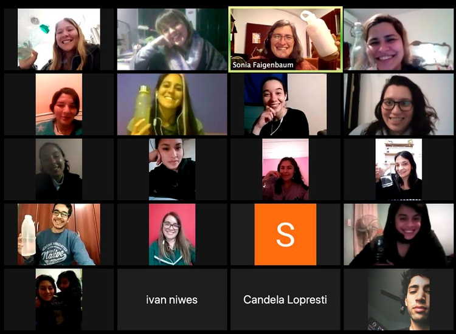
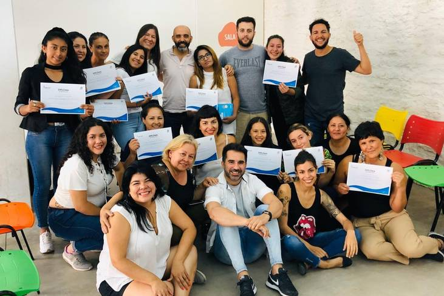

PUBLICADO EL 29 DE SEPTIEMBRE DE 2020 - AUTOR AUTOR Martina Rua - LA NACIÓN
El talento está en todos lados, pero las oportunidades no están igualmente distribuidas. Concientes de esto, y con la premisa de empezar a achicar esta desigualdad, es que en junio de 2019, un puñado de profesionales de grandes empresas argentinas especializados en habilidades digitales se preguntaron. ¿Cómo hacemos para llegar a los chicos que no pueden pagar una educación especializada, para que tengan acceso a esos contenidos de calidad? La respuesta fue donar parte de su tiempo y conocimientos para que jóvenes de entre 18 y 35 años tengan las posibilidades que tuvieron ellos de acceder a educación en muchos de los roles más buscados hoy en tecnología.
Así nació Semillero Digital, que se presenta como una iniciativa que busca sembrar integración social a través de la educación en oficios digitales. Quienes dan los cursos son profesionales digitales de empresas como Visa, Mercado Libre, Pedidos Ya, Ukelele, y Adidas, entre otras, que brindan capacitaciones gratis a jóvenes de los barrios Ejército de los Andes, San Fernando, Barrio 31 y Soldati. "La idea de Semillero Digital se hizo realidad en junio del año pasado. Armamos un gran equipo con profesores y mentores de diferentes empresas que, de manera ad-honorem, brindan su tiempo y conocimientos para enseñar sobre plataformas y herramientas digitales a jóvenes que no tienen acceso a la educación formal luego del secundario", cuenta Demian Niedfeld, cofundador de Semillero Digital y CEO de Ukelele, agencia especializada en técnicas de crecimiento de marketing para comercio electrónico.
Demian Niedfeld, cofundador y coordinador general de Semillero Digital
En el último año el sector del comercio digital se duplicó mientras que el acceso al talento, no. "Sin embargo, por primera vez en la historia de una industria, una persona puede capacitarse tan rápido y lograr insertarse en el mercado laboral profesional con un empleo en blanco", agrega Niedfeld. En el contexto de la pandemia, la academia digital social tomó impulso y amplió su oferta de cursos para que cada vez más jóvenes puedan acceder a capacitaciones digitales simples que le permitan pasar del empleo informal al formal de manera rápida y sin costo. Y la capacitación tiene un gran impacto en los y las jóvenes que se animan a capacitar en habilidades digitales. "Soy del Barrio Ejército de los Andes y llegué a Semillero a través de una conocida que participa de las actividades en la capilla del barrio, donde siempre dictan distintos cursos. Durante el aislamiento social, decidí hacer uso de ese tiempo en para poder tener una mejor salida laboral. Me interesó desde el principio ya que podía aportar en mi currículum y hacer un mejor uso de las redes. También, algo que me atrajo fue la calidez y responsabilidad de las personas que la integran y el incentivo que le dan a los jóvenes en situaciones vulnerables para que sigan adelante a pesar de la situación", cuenta su experiencia Sofia Mailen Gómez, de 21 años, que es estudiante de Operador de Ventas de Mercado Libre.
La propuesta busca generar valor en ambos lados de la cadena y a raíz de esto cuenta con dos grupos de beneficiarios: los jóvenes en situación de pobreza económica que no pueden acceder a una capacitación digital paga y a los que el universo digital les puede resultar difícil de alcanzar; y los profesionales digitales, que suelen tener una buena posición socioeconómica pero que sienten la necesidad de contribuir a un propósito mayor y a los cuales no les es indiferente la inequidad. Juan Pablo Granda es director de Desarrollo de Negocios de PedidosYa y facilitador del curso Operador de Ventas en Mercado Libre en Semillero Digital. "En Semillero encontré el lugar donde siento que mi experiencia profesional genera un impacto directo en los chicos que no tuvieron las mismas oportunidades que tuve yo, y ellos a su vez me devuelven por 10 en energía e inspiración con su compromiso y esfuerzo. Conocer sus historias personales y ver cómo frente a todo tipo de adversidades y obstáculos ellos le meten garra a superarse, me transformó por completo y me hacen apostar cada día más por este hermoso proyecto", relata.
Los cursos de oficios digitales de Semillero Digital, en Zoom en 2020
Otro de los profesores del semillero es Javier Cantero, gerente de Club LA NACION, que sentía que había alcanzado un momento más cómodo en su vida profesional y personal, pero le inquietaba buscar la manera de contribuir a la sociedad de alguna manera. Hoy facilita el curso de Gestión de Tienda eCommerce. "Llegué a Semillero en plena gestación del proyecto y me enamoré. Poder contribuir transmitiendo a otros el conocimiento que uno puede tener porque es lo que hace todos los días y hacerlo con personas que lo hacen con el corazón, el círculo virtuoso es muy evidente: unir el universo de una demanda laboral digital creciente, con jóvenes de enorme potencial y vocación digital que, a veces, no tienen la oportunidad de demostrarlo por las circunstancias de la vida de cada uno", destaca.
Para que esta conexión sea posible, Semillero Digital articula sus esfuerzos con organizaciones sociales que suman a su currículo de capacitaciones de inserción laboral a los cursos digitales y los ofrecen en diferentes barrios vulnerables; y con empresas nacionales y multinacionales que pueden acceder a estos nuevos talentos para integrar sus equipos de marketing y comercio electrónico con mayor diversidad e inclusión en sus equipos. "Ingresé a Semillero Digital como mentora de Olimpia, una chica de 19 años del Barrio 31, a la que pude acercarme como par. Cuando armamos su LinkedIn, después de dudar un tiempo se autodefinió como "Emprendedora" y ahí ya sentí que estábamos haciendo algo súper valioso, como despertando algo. Este cuatrimestre estoy como profesora del Curso de Operador en Mercado Libre donde me puedo dar el lujo de transmitir un poco más de lo que fui aprendiendo en mi carrera para que otras personas puedan valerse de eso para insertarse en el mercado laboral digital, con formación que pueda brindarles oportunidades reales de crecimiento y con eso aportar un poco a una temática tan compleja como la inequidad de oportunidades.", cuenta Lucila Di Vanni Frick, UX Writer en Mercado Libre y Facilitadora del curso Operador de Ventas en Mercado Libre.
Los asistentes a uno de los primeros cursos de Semillero Digital, pre pandemia
Algunos jóvenes que acceden a la capacitación consiguen empleos en las empresas donde se desarrollan los facilitadores. "En 2018 hice un curso de capacitación laboral. Como me gusta todo lo que es tecnología, me comentaron para hacer un curso de Google Ads de Semillero. Me copó entrar porque no sabía de Marketing, y me interesaba saber cómo es que se maneja todo desde Google Ads. Gracias a la confianza y que recibí en el curso me dieron ganas de comenzar a estudiar Licenciatura en Sistemas en la Universidad Nacional General Sarmiento y además me acercaron la oportunidad de participar de una entrevistas en la agencia de ecommerce Ukelele de la que hoy tengo la suerte de formar parte", cuenta Sheila Diz, de 20 Años, que nació en el barrio de San Fernando.
Para Lucas Adrián Fernández, Digital Partner Commerce Sr. Manager en Adidas, Cofundador & Mentor de Semillero Digital, la iniciativa tiene un claro propósito de transformación social y esto es lo que lo motiva a ser parte. "La idea de brindarnos para transformar la realidad de un pibe o una piba que vive en un contexto de pobreza económica y con acceso limitado al empleo formal, acercando capacitaciones y herramientas digitales en un entorno de acompañamiento, es realmente algo que me moviliza desde lo más profundo y me invita a dar el máximo por el proyecto", cierra.
El programa está dirigido a jóvenes de entre 18 y 35 años que viven en la Ciudad o el Gran Buenos Aires y que terminaron el secundario o están próximos a terminar, con conocimientos básicos sobre el uso de PC, manejo de paquete Office y de redes sociales y buscadores.
Sumados a los tres cursos con los que comenzó el año pasado y de los cuales participaron 65 alumnos de Barracas, Virreyes y Barrio 31, este año se están dando cuatro capacitaciones en operador de Mercado Libre, desarrollo de tienda eCommerce y Community Manager a más de 85 jóvenes, gracias a que el cambio en la rutina laboral de muchos profesionales permitió sumar más profesores y mentores a la iniciativa.
"La calidad de nuestros profesores y mentores nos permiten brindar una calidad de educación muy elevada. Hoy en Ukelele ya tenemos jóvenes capacitados trabajando con nosotros. Es realmente muy gratificante poder formar parte de esta iniciativa que rápidamente nos permite tener un impacto social positivo", concluye Niedfeld.
Los jóvenes interesados en capacitarse, así como los profesionales u organizaciones que quieran formar parte del proyecto pueden comunicarse con Semillero Digital ingresando a sus cuentas oficiales en Instagram o en LinkedIn.